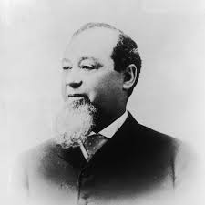
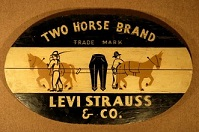
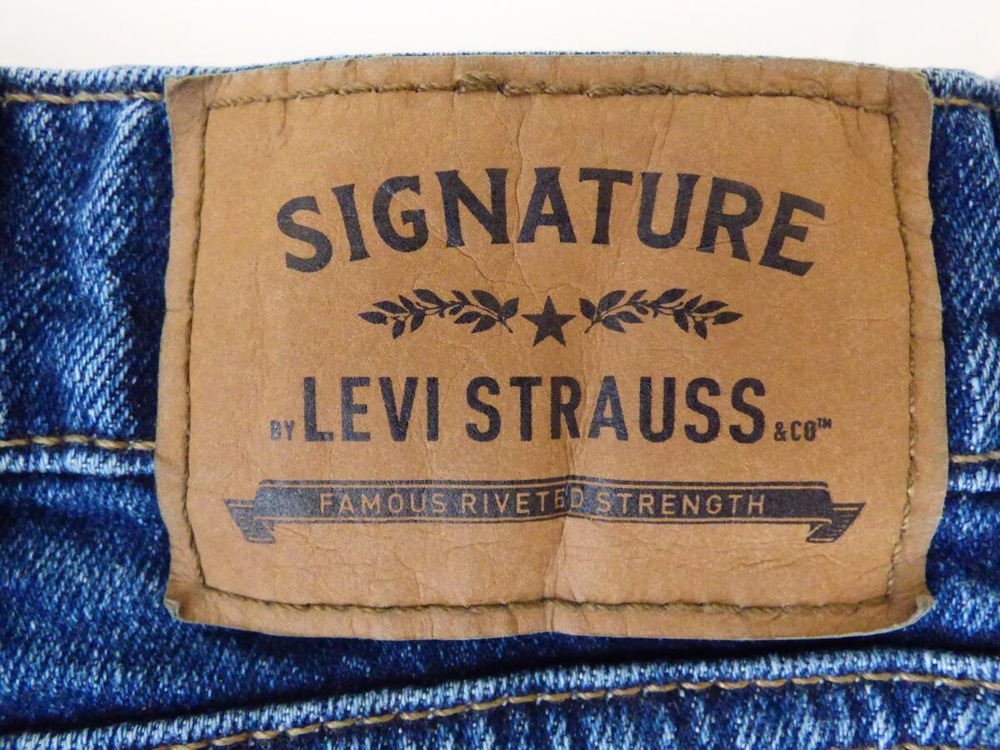

1853: The Founder
Levi Strauss immigrated to San Francisco during the Gold Rush and created durable pants from tent canvas, later switching to denim.

1886: Two Horse Trademark
The iconic logo showed two horses failing to tear the pants apart, symbolizing unmatched durability.

1934: Introducing Lady Levi's
Levi's expands it's product line to offer jeans for women.

2003: Levi Strauss Signature Launches
This popular line serves consumers at large retail stores, becoming a staple for many households.